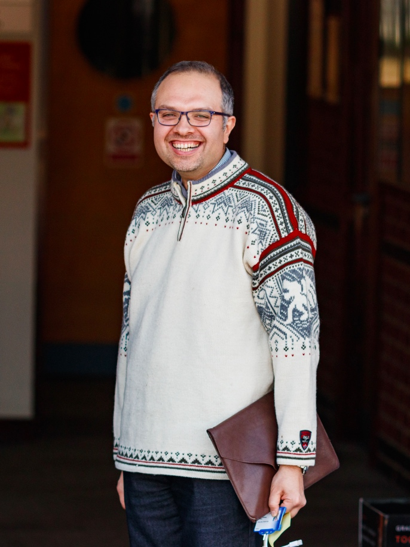

Concurrency theory
(particularly, process algebra and Structural Operational Semantics)

Photo by Maciej Gazda.
Short Bio
Mohammad is a professor of Software Engineering at the Department of Informatics, King's College London, where he is the Deputy Head of Department - Research.
Pripor to joining King's,
he held positions at Reykjavik University (postdoctoral researcher),
Eindhoven University of Technology (assistant and associate professor),
Delft University of Technology (guest faculty member),
Halmstad University (professor of Computer Systems Engineering),
Chalmers / University of Gothenburg (guest professor of Software Engineering), and the University of Leicester (professor of Data-Oriented Software Engineering).
Mohammad's main research area is in model-based testing, particularly applied to quantum systems, software product lines, and cyber-physical systems.
He has been leading several research initiatives and industrial collaboration projects on healthcare and automotive systems their validation, verification, and certification.
We regularly engage with policy-makers and the general public, write policy notes, and organise outreach activities on the theme of Quantum Software and Trust in Autonomous Systems. Here you can find some examples of our policy and outreach material:
A policy note, as a response to the call for
evidence from the Department for Business, Energy & Industrial Strategy and
the Centre for Connected and Autonomous Vehicles on the Future of Connected and Automated Mobility in the UK.
A conversation on the future of autonomous vehicles
with Siddartha Khastgir, Jon-Ann Pattinson, Sara Sharples, and Jack Stilgoe.
Our research and outreach has been featured on Aljazeera, BBC Radio 4, BBC Leicester Radio, and Discovery Education (for Key Stage 2 Children). We have been actively participating in the TeenTech program, promoting science, technology, and engineering among children.
Some past events where I served as a chair / invited speaker:
The 3rd International Workshop on Testing Extra-Functional Properties and Quality Characteristics of Software Systems (ITEQS 2019) (PC Co-Chair with Birgitta Lindström and Eduard Enoiu)
The 21st Brazilian Symposium on Formal Methods (SBMF 2018) (with Tiago Massoni).
2nd International Conference on
Topics in Theoretical Computer Science (TTCS 2017) (with Jiri Sgall).
\item The 6th Workshop on Design, Modeling and Evaluation of Cyber Physical Systems (CyPhy 2016) (with Rafael Wisniewski and Christian Berger).
AUTO-CAAS: Automated Consequence Analysis for Automotive Standards, Funded by the Swedish Knowledge Foundation (Principal Investigator, 2016-2018)
FAR-EIS: Expanding the EIS Masters Program to Support Distance Learning, Funded by the Swedish Knowledge Foundation (Co-Investigator with Walid Taha, 2015-2017)
EFFEMBAC: Effective Model-Based Testing of Concurrent Systems, Funded by the Swedish Science Council (Principal Investigator, 2014-2017)
EU FP7 INESS Project: INtegrated European Signalling System, Funded by the European Commission (Collaborator with Bas Luttik and Jaco van de Pol, 2008-2012)
SOS: New Developments in Operational Semantics, Funded by the Icelandic Reearch Funds (Collaborator, with Luca Aceto and Anna Ingolfsdottir, 2008-2010)
Unifying Framework for Operational Semantics, Funded by the Icelandic Reearch Funds (Principal Investiagor, 2007-2010)
{kind=link}